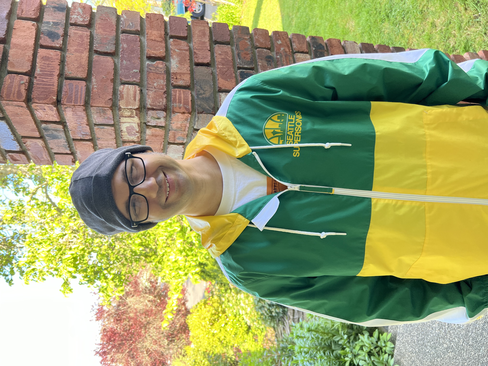

Hello, my name is Brian Kidd and I am a Web and Multimedia
Developer. But what exactly does that mean?
Put succinctly, it means that I specialize in Web Design and
Development, UX Design, Web Content Writing and Editing, and Audio
and Video Production.
As a writer, it means that I love to write and edit web content. I
earned my first degree in Journalism from the University of
Washington and was awarded The Excellence in Journalism from The
Department of Communication. However, with regards to my career,
writing is not the entire picture but a very important part of it.
As a musician and videographer it means I have an affection for
audio and video production. Since owning my first Tascam 424 four
track music recorder and also my first camcorder as a kid, I have
been writing, recording and producing music and video content.
Currently, I play and produce music in an electronic music act
called
Kylmyys and
besides live performances we independently produce music for TV,
film and radio and create music videos. However, like writing,
audio and video production is not the entire picture, but a very
important part of it.
Although I have a great affinity for the aforementioned fields, it
was my introduction to the Web, and the many multimedia
possibilities that it offered, that piqued my interest in Web
Design and Development. To create beautiful websites, some with
pictures, music, videos, articles et-cetera, seemed like an
impossible feat at first, especially since I had not written one
line of code until I was well into my 20s. However, I bought an
O'Reilly book about HTML, signed up for a Tripod account (yes I
wrote 'Tripod') and as most noob programmers do, I typed in the
phrase "Hello World!" into the text editor. Once I saw those words
live for anyone online in the entire world to see, my eyes widened
as I knew this would be the beginning of a lifelong dedication to
contributing quality content to the Web, with both passion and
precision.
After receiving a degree in Web Application Programming and
several programming certs, the picture of my career path is
complete. Currently my concentrations are on UX Engineering and
Front End Design and Development–along with UX Design. Please See
my CV below for more information.
Download CV
Contact Me